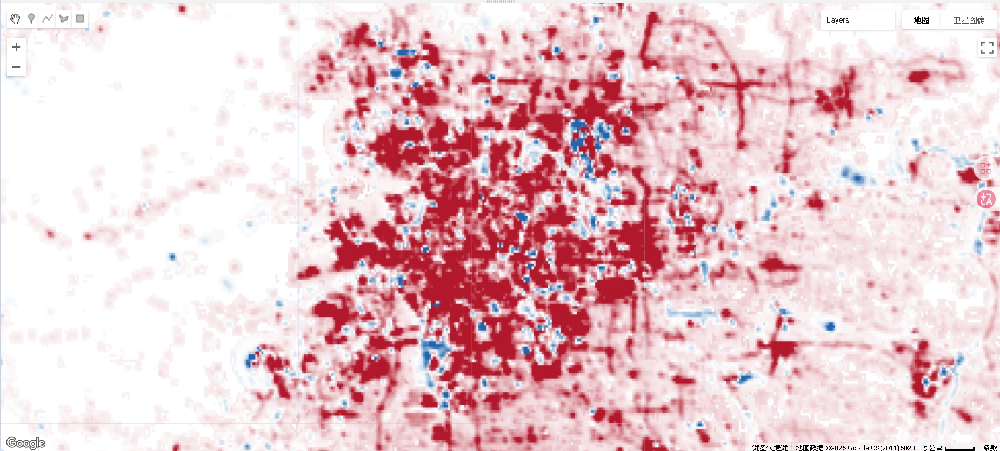
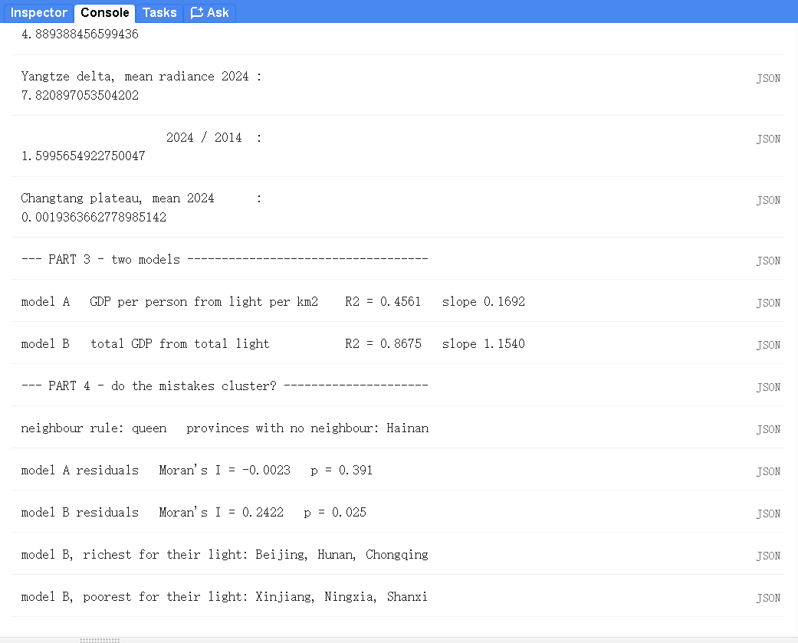

Lab 06 · November 2026
Predicting GDP with Nighttime Light Data
The question
Can we use the nighttime light data to predict the GDP of 31 provinces in China?
The data
The GDP data is the 2024 figure from the China Statistical Yearbook 2025. Hong Kong, Macau and Taiwan are not included. The 2014 and 2024 nighttime light data is from Googel Earth Engine.
The method
I used Google Earth Engine (GEE) to analyze the relationship between nighttime lights and economic activity across China's 31 provincial-level regions. I applied two log-transformed linear regression models using 2024 GDP data: Model A predicts GDP per capita from nighttime light density, while Model B predicts total GDP from total nighttime light. I compared their R² values to evaluate model fit. To identify spatial patterns in prediction errors, I calculated Moran's I for each model's residuals using Queen contiguity, where provinces sharing a boundary are considered neighbors. Hainan province is a special case with no neighbors at all. I then conducted 999 random permutations to estimate pseudo p-values. Finally, I changed the neighbor rule to KNN4, which assigns each province its four nearest neighbors, to examine how the spatial relationships affect the results. You can access the code here.


What I found
| Question | Response |
|---|---|
| Q1. Write the Yangtze delta ratio and the Changtang value from Part 2, and both R² values. Then, before Part 4, write one sentence: which model would you report, and why? | I'll choose model B, since lights mainly come from built up areas, and it's a representation of level of development. |
| Q2. Write Moran's I and the p-value for both residuals, from two runs. Why did one of those four numbers move and the other not? | The Moran's I of model A is -0.0023 in both of the two runs, with p = 0.391 and 0.381 in the first and second run. The Moran's I of model B is 0.2422 in both of the two runs, with p = 0.025 and 0.018 in the first and second run. The Moran's I remains unchanged between runs because it is calculated from the same residuals and neighbor relationships. However, the pseudo p-values vary slightly because each run performs 999 new random permutations of the residuals. |
| Q3. Write the two new values. Did your conclusion change? | After changing the neighbor rule from Queen contiguity to KNN4, Model A's Moran's I becomes +0.0141 (p = 0.288), while Model B's Moran's I increases to +0.2753 (p = 0.007). My conclusion does not change: Model A still shows no significant spatial autocorrelation, while Model B still exhibits significant clustering of residuals. |
What this does not show
I think the most important limitation is that nighttime light is only a proxy for economic activity, not a direct measurement of GDP. Some economic activities, such as agriculture, produce little artificial lighting, while activities like gas flaring can generate substantial light without equivalent economic benefits. Furthermore, aggregating data at the provincial level overlooks economic differences within each province.
AI use: AI-assisted for html coding, using Claude Code. I verified it by opening the page on a phone and a laptop and confirming no external resources were added. The the tables and the interpretations are my own.